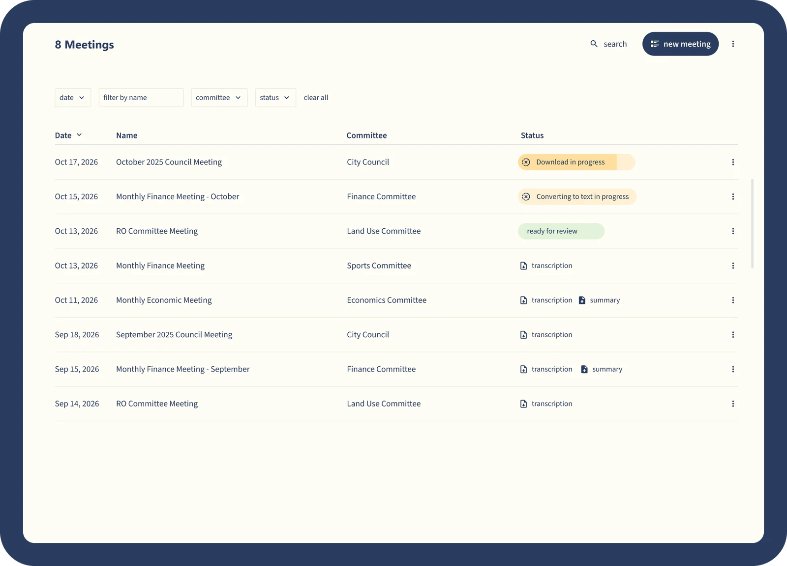
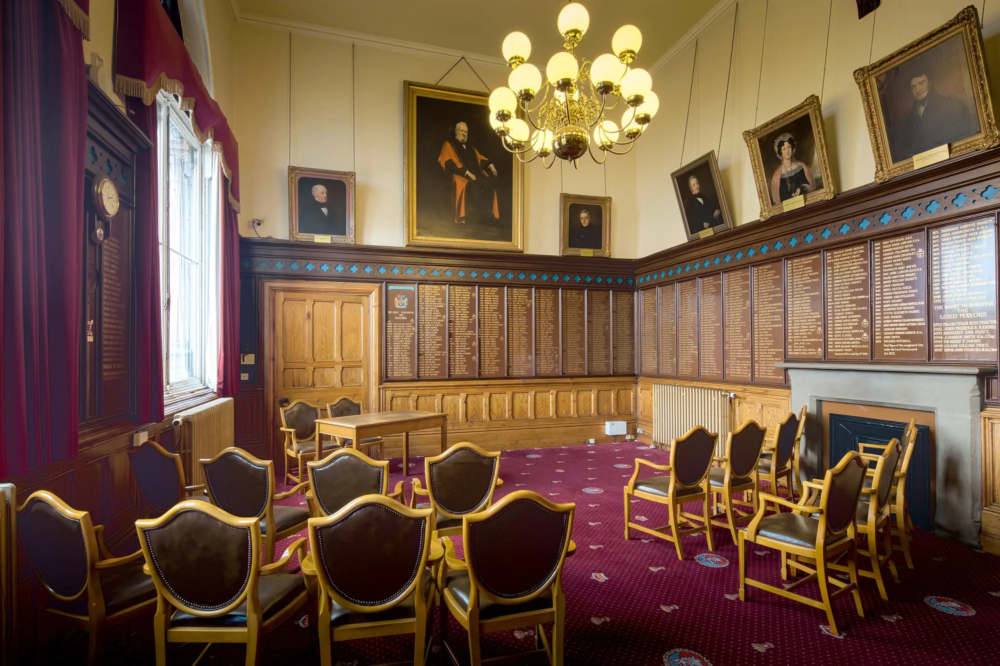

Your meeting, written up.
Taking minutes eats hours. Upload the recording and the agenda, and AI Minutes gives you a clear, structured record of the meeting, ready for your final check.

Quick records
A complete report of the meeting, so the team can follow the debate while it happens.
Clear summaries
Long discussions turned into short summaries, with the key points easy to find.
Speakers recognised
Link a voice to a name once. AI Minutes knows them in every meeting after that.
Secure
Recordings and transcripts processed and stored under strict security and privacy standards.
Four steps from recording to record.
Create voice profiles
Each participant reads a short text on their phone. It's how AI Minutes tells speakers apart and keeps the transcript accurate.
Upload agenda and recording
The agenda in Word, the recording as mp4, mp3, wav or mov.
AI transcription
The recording becomes a transcript. Speaker names are linked once, then recognised automatically. Adjust anything in the built in editor.
Choose your format
A verbatim transcript, a summary per agenda item, a speaker overview or subtitle files for the video.
See where each set of minutes has got to.
Each meeting shows its committee and its status, from converting to text through to ready for review, with the transcript and summary a click away.
- Standalone or fully integratedUse AI Minutes on its own, or inside Qualigraf so the minutes land on the right meeting and file.
- Human proofing when it mattersOur optional review service checks the final version for you.
- Ready for the webcastSubtitle files for the meeting video, straight from the transcript.


The officer in the room gets to listen.
With the recording doing the note taking, the clerk can follow the debate, advise the chair and catch the moment a motion is amended.
Try AI Minutes on 5 hours of your own meetings.
Tell us a little about your council and we'll set up your trial. Use a real recording and see what comes back.

Stuart Benson
Director of Sales and Customer SuccessRather talk it through? 07741 080343 or stuart@qualigraf.com
Thanks, we've got your request.
We'll be in touch quickly to set up your 5 free hours.
Bring your hardest meeting. We'll run it on Qualigraf.
A walkthrough built around your own committee cycle, your deadlines, your approval routes and your Members.